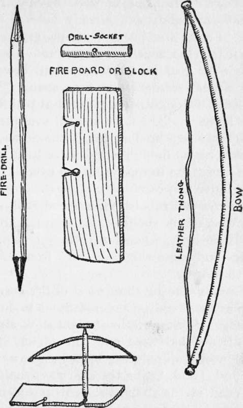

Lost. Part 2
Description
This section is from the book "The Boy Scouts of Woodcraft Camp", by Thornton W. Burgess. Also available from Amazon: The Boy Scouts Of Woodcraft Camp.
Lost. Part 2
" You can cut down a big tree with a penknife if you can only bend the tree over far enough," said he as he trimmed the sapling. When he had finished he had a pole perhaps twelve feet long. Fishing some stout twine from one of his capacious pockets he lashed the pole firmly to the two trees about six feet from the ground.
" Now hustle and get a lot of sticks 'bout ten feet long," he commanded.
These were not so easily obtained, but by dint of much feeling around and effort on the part of the two boys enough sticks and young saplings were secured to answer Billy's purpose. These were arranged with butts on the ground and other ends supported on the crossbar between the two trees, all slanting evenly in the same direction.
" Now heap up all the brush and leaves you can scrape up," commanded the young architect, bringing up an armful of spruce boughs he had obtained from a near-by windfall. Thatched in this way the rude lean-to was soon completed. It was a rough but effective shelter, and with a few balsam boughs spread on the ground beneath it Billy felt that they could spend the night with a reasonable degree of comfort.
" Now if we only had a fire this wouldn't be half bad," he muttered. " Got any matches, Spud ? "
" What do you take me for ? You know the rules," growled Spud.
Billy knew. Matches were absolutely tabooed in Woodcraft Camp, that there might be no chance of a forest fire from the carelessness of just such reckless youngsters as Billy.
" Wish I'd brought my fire stick," grumbled Billy.
" I've got mine," said Spud.
" What ! You blink-eyed owl ! Why didn't you say so before?" whooped Billy. " Trot it out! "
The cautious Spud demurred. " You know the rules, Billy, and that building a fire without permission means expulsion," he protested.
" Expulsion nothin'! " replied Billy. " Do you s'pose the big chief's goin' to fire us for keepin' from freezin' to death? We'll be 'bout frozen by morning without blankets nor nothin'. Here, you give it to me. You needn't have anything to do with makin' the fire. I'll make it, and tell the doctor so when we get in. There ain't any danger, 'cause one of us will be on watch all the time."
Reluctantly Spud produced from an inner pocket a little block of wood having in the middle a shallow pit, already charred with use. From this pit a V shape groove extended to the edge. From around his neck under his coat he unslung a small bow having a slack leather thong for a string. With this was a straight stick pointed at both ends. Lastly he brought forth a small oval piece of wood having a shallow pit in the center, and a little bag of finely ground cedar bark.
Put together in use - Billy's Apparatus for Making Fire
All of these things he turned over to Billy. The latter first carefully cleared the ground of all leaves and rubbish for a considerable space in front of the shelter. He then felt around until he had gathered a little bundle of dry twigs and some shreds of bark from a fallen birch near by.
Resting the block of wood or fire-board on a piece of bark he ordered Spud to hold it steady. Taking up the straight stick already mentioned he rested one pointed end in the hollow of the fire-board, looped the bow thong around it and, fitting the oval piece to the upper end of the straight stick by means of the hollow in the center, he was ready for business Holding the oval piece in his left hand he bore down lightly, at the same time grasping the bow in his right hand and moving it rapidly back and forth. This caused the straight stick or drill, as Scouts call it, to revolve rapidly.
It was too dark to see, but almost at once the boys smelled smoke, and a few seconds later a tiny coal glowed on the piece of bark on the edge of which the fire-board rested. Dropping his tools Billy picked up the piece of bark, and covered the coal with cedar bark from Spud's bag, while he gently blew upon it. The bark was really tinder, prepared as the Indians prepared it before ever the white man brought his own first crude fire-making methods to startle the Red Men. The smoke increased in volume. A tiny flame flickered, disappeared, flickered again, then hungrily licked at the edge of a strip of birch bark that Billy held to it.
Hastily setting down the piece of bark holding the tiny fire he arranged the dry twigs over it in a loose pile and had the satisfaction of seeing the blaze leap up merrily, Larger sticks were laid over the pile, and in a few minutes the dancing flames were making a circle of cheerful light that flooded the lean-to with warmth and cast weird shadows among the trees.
By the light from the fire the boys were able to gather a supply of wood wherewith to keep it going through the night and under its cheering influence their spirits rose wonderfully.
" If we only had something to eat-" began Billy.
" Shut up ! " interrupted Spud. " I'll be chewin' pine-needles in a few minutes."
Billy had a sudden inspiration. Fishing the bee box from his coat pocket he extracted the piece of syrup-soaked bread with which it had been baited and eyed it critically. " There's just half a bite apiece, and a swallow of syrup for each of us in the bottle," said he. " Shall we have it now or wait till morning?"
" I wouldn't trust you with it till mornin'. We'll have it now," grunted Spud.
The night had settled down still, and with a chill in the air that made the warmth of the fire very welcome. Beyond the zone of the firelight a wall of blackness hemmed them in. Now that camp had been made and there was nothing to do but wait for daylight the loneliness of their situation weighed upon their spirits. They drew closer together on an old log which they had drawn before the fire for a seat. Suddenly Billy raised a warning hand.
"What is it?" whispered Spud, edging a bit nearer.
" I thought I heard a shot," replied Billy.
With straining ears the boys sat and waited what seemed an interminable length of time before they caught the faint sound of three shots fired in quick succession. Spud sprang to his feet.
" They're lookin' for us, Billy. Let's give 'em a yell," he cried.
First one, then the other, then both together they yelled at the top of their lungs until their throats were strained and raw. Then they realized the futility of wasting breath in this way.
" 'Tain't no use, not a bit. May as well save our breath. We can't hear those shots plain enough to tell what direction they come from, so of course nobody can hear us," said Billy, disconsolately resuming his seat by the fire.
Continue to:
- prev: Chapter XII. Lost
- Table of Contents
- next: Lost. Part 3